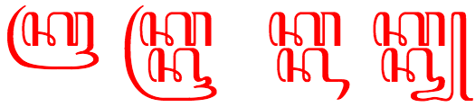

This page provides basic information about the Javanese script. It is not authoritative, peer-reviewed information – these are just notes I have gathered or copied from various places as i learned. For similar information related to other scripts, see the Script comparison table.
Clicking on red text examples, or highlighting part of the sample text shows a list of characters. Click on the vertical blue bar (bottom right) to change font settings for the sample text.
Note: ZWSP has been added between orthographic syllables in the above text in order to allow the text to wrap. The major browsers don't wrap it automatically.
Murda forms can be viewed as a kind of capital letter for proper nouns (not sentence initial letters), used as honorifics. They are used to replace an ordinary letter form in the first syllable of the name. However, not all letters have a murda form, so if there is no letter in the first syllable that has a murda form, one is used for the next syllable in the name that has one.
Highly respected names may be all 'capitalized' if the corresponding murda are available.
Mahaprana forms were originally aspirated consonants used in Sanskrit and Kawi transliterations (mahaprana means aspirated). They are rarely, if ever, found in modern text.
These three characters are treated as vowels in other scripts, such as Balinese, but as consonants in Javanese. They represent the sounds rə, lə and lɤ, rather than a consonant plus inherent vowel, and take no vowel signs, eg. ꦊꦩꦃꦊꦩ꧀ꦧꦸꦠ꧀lemah lembutgentle.1 They do, however, have conjoint forms.
The absence of a vowel sound between two consonants shown as letters (ie. not involving medial or final consonant diacritics) is shown by altering and/or subjoining the second consonant. Since words are not separated by spaces, this process also works across word boundaries.
In Unicode text, the catalyst for this process is the inclusion of ◌꧀[U+A9C0 JAVANESE PANGKON] between the two letters.
In the following example, hak-hak kang, we see the combination kh, which alters the form of the second consonant without subjoining, and kk, which subjoins the second k with a slightly different shape.
ꦲꦏ꧀ꦲꦏ꧀ꦏꦁꦥꦝ
Note, however, that the combination ngp near the end does not involve subjoining or shape changing, since the ng is expressed using a diacritic.
Javanese uses ◌꦳[U+A9B3 JAVANESE SIGN CECAK TELU] with a similar consonant to represent most foriegn sounds, particularly those from Arabic.
When consonants are subjoined there can be some ambiguity about which consonant the cecak telu applies to. For example, ꦏ꦳꧀ꦗkza and ꦏ꧀ꦗ꦳xja look identical.
Wikipedia has a set of Chinese sounds that are represented using some combining characters from a non-Javanese block.
The normal way to represent independent vowels in Javanese is to combine a vowel sign with ꦲ[U+A9B2 JAVANESE LETTER HA], eg. ꦲꦪꦸayugraceful. The independent vowel letters are used in Javanese to distinguish proper nouns or foreign words from ordinary words, eg. compare ꦄꦪꦸAyu, a personal name, with the previous example.2
There are 8 independent vowel letters (ꦄ ꦅ ꦆ ꦇ ꦈ ꦌ ꦍ ꦎ).
When a vowel-sign follows a subjoined consonant it appears above the stack. The following example shows the word kanthi, where the i appears above the n.
ꦏꦤ꧀ꦛꦶ
It is perhaps worth noting also, that a two-part vowel associated with a consonant cluster involving a conjoined (rather than subjoined) second consonant appears before and after the whole cluster, eg. see how the o surrounds the ns in mangan soto:
As described in the consonant section above, suppressed inherent vowels are indicated by either (a) changing the shape and/or position of the following character, (b) using a medial consonant diacritic, or (c) using a word-final consonant diacritic.
Where no letter follows the consonant where the vowel is silent, for example at the end of a sentence or isolated word or before a number, a visible ◌꧀[U+A9C0 JAVANESE PANGKON] is used, eg.
ꦏꦿꦸꦥꦸꦏ꧀
Occasionally ◌꧀[U+A9C0 JAVANESE PANGKON] may be visible in the middle of a word, eg. ꦧꦶꦱ꧀ꦠꦿꦤ꧀ꦱ꧀ꦗꦏꦂꦠbis transjakartatransjakarta bus. It's not clear from the Unicode Standard how to achieve this, however a zero width space works, and so does a zero width non-joiner.
Glyph shaping is required for Javanese. One principle area is that of subjoined or postfixed consonants, which often interact typographically with the preceding consonant.
In the following example, the two syllables to the right show how ◌ꦿ[U+A9BF JAVANESE CONSONANT SIGN CAKRA] changes its shape to match the height of the syllable. The third syllable from the left shows ꦏ[U+A98F JAVANESE LETTER KA] followed by a subjoined version of the same character; note how the bottom right of the subjoined glyph adapts to join with the syllable final glyphs that follow it in the syllables that are 2nd and 4th from the left.

The next example show different renderings of the u vowel-sign after the second character in a consonant cluster.
Obviously the principle of subjoining consonants requires rules about positioning, and those rules need to be disregarded for combinations where the second character of a cluster is not subjoined (though it usually changes shape).
In the following example we see ka with cecak telu on the left. In the middle syllable cecak telu has shifted slightly to the left to make room for the other diacritic. In the right-hand syllable the cecak telu has both moved and reduced in size to fit with the other diacritic.
Another example of the need for special positioning occurs when a vowel-sign is pronounced after a subjoined consonant but appears above the previous consonant in the stack (see the example earlier).
Javanese uses native digits (꧐꧑꧒꧓꧔꧕꧖꧗꧘꧙), which are decimal-based and used in the same way as European numerals.
Several of the digits are identical to letters of the alphabet, so sometimes ꧇[U+A9C7 JAVANESE PADA PANGKAT] is used with numbers to indicate what they are.
ꦠꦶꦁꦏꦠ꧀꧇꧒꧕꧇
Everson, on the other hand, says that ꧈[U+A9C8 JAVANESE PADA LINGSA] is used for this purpose, and gives the examples ꧈꧖꧈꧘꧈꧙꧈6 8 9 and ꧈꧒꧐꧐꧗꧈2007.5
Titles may be marked by a pair of rerenggan characters, ie. ꧁...꧂. The glyphs for these characters may vary substantially.
Letters may begin with ꧋꧆꧋ if the writer doesn't want to indicate a distinction regarding age or rank between themselves and the reader. Otherwise, for more formal letters, they can choose one of three alternatives provided as single characters in the Javanese Unicode block. ꧅[U+A9C5 JAVANESE PADA LUHUR] is used for letters to people of greater age or higher rank, ꧄[U+A9C4 JAVANESE PADA MADYA] for people of equal age/rank, and ꧃[U+A9C3 JAVANESE PADA ANDAP] for people of lower age/rank. The difference between these three is the height of the swash to the far left.
The end of a letter can be signaled using ꧉꧆꧉. This combination may also involve just ꧆꧉, or may be repeated with spaces between to fill the line, eg. ꧉ ꧆ ꧉ ꧆ ꧉ ꧆ ꧉ .5
In poetry꧅ꦧ꧀ꦖ꧅ or ꧅ꦧ꧀ꦕ꧅ (purwapada) introduces a poem; ꧅ꦟ꧀ꦢꦿ꧅ (madyapada) introduces a new song within a poem; and ꧅ꦆ꧅ (wasanapada) indicates the end of a poem.
Optionally, ꧉[U+A9C9 JAVANESE PADA LUNGSI] can be added to the above with some space around it. The spaces should be non-breaking, since there should be no line-breaks between the constituent parts, eg. ꧅ ꧉ ꦧ꧀ꦖ ꧉ ꧅.5
According to Wikipedia ꧟[U+A9DF JAVANESE PADA ISEN-ISEN] is used in handwriting to indicate a correction in Yogyakarta, eg. where a scribe wanted to write pada luhur but actually wrote pada wu.. they would use this mark as follows: ꦥꦢꦮꦸ꧟꧟꧟ꦭꦸꦲꦸꦂ.
A repeated syllable can be represented by ꧏ[U+A9CF JAVANESE PANGRANGKEP], which is derived from the arabic-indic digit for 2, eg. ꦧꦸꦏꦸꧏbuku-bukubooks. It can be transcribed as buku2.
Like Tibetan, line breaking can occur after any full orthographic syllable. Hyphenation is not used.
In some printed material, when a new line begins with ◌ꦺ[U+A9BA JAVANESE VOWEL SIGN TALING], an additional spacing one is placed at the end of the previous line.
The following is an incomplete list of languages and the number of characters they use. Javanese script doesn't appear in version 31 of CLDR's lists of characters (exemplarCharacters).
Click on the links to see a list of characters with names.